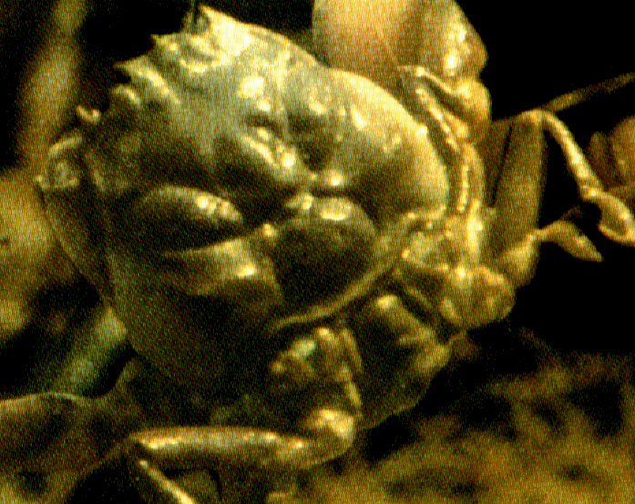

The Heike Crab

Heikegani
A species of crab with a shell that bears a pattern resembling a human face which many believed to be the face of an angry samurai hence the nickname Samurai Crab.According to Japanese folklore, the Heikegani crabs contain the souls of the Heike samurai warriors who were slain at the Battle of Dan-no-ura in 1185 AD, a war over the Japanese imperial throne. The story goes that the Heike samurai, reincarnated into the Heikegani crab, were showing their allegiance to their clan by donning a fierce mask on their shells. The battle of Dan-no-ura, immortalized in the Heike Monogatari (the Tale of Heike) was a pivotal moment in Japan's history, which established the first shogunate (military dictatorship) and resulted in the death of a child emperor.
Heikegani were used as an example of unintentional artificial selection.